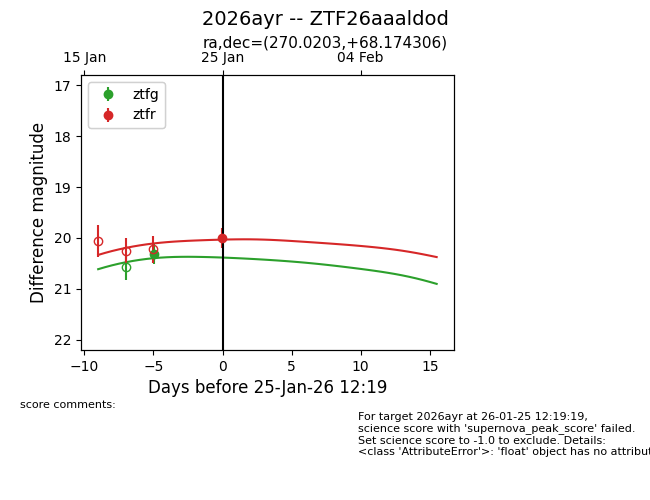
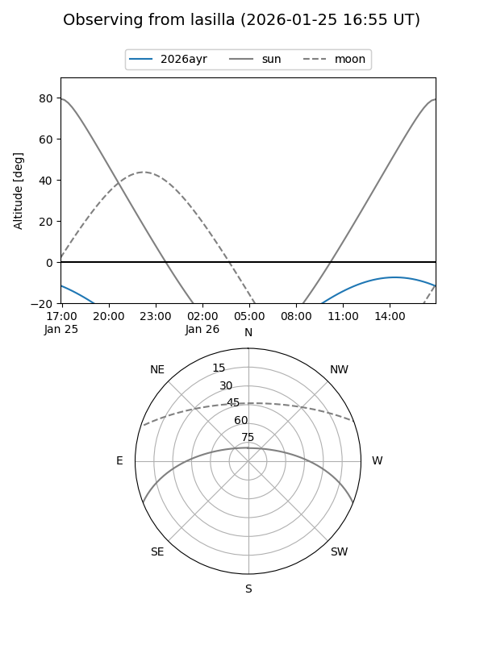
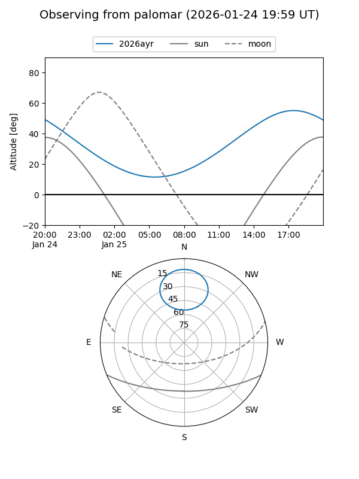
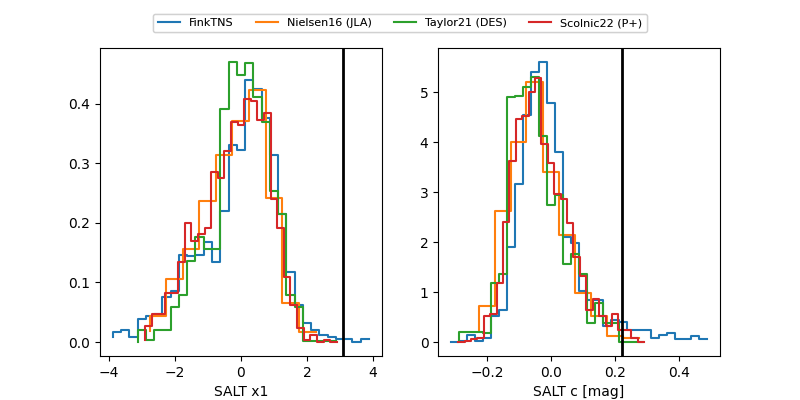

2026ayr
Target 2026ayr at 2026-01-25 12:21
Aliases and brokers:
FINK: link
Lasair: link
ALeRCE: link
TNS: link
YSE: link
alt names
ZTF26aaaldod (ztf,fink_ztf)
2026ayr (tns,yse)
Coordinates:
equatorial (ra, dec) = 270.0203,+68.17431
equatorial (HMS+DMS) = 18:00:04.88,+68:10:27.50
galactic (l, b) = (98.2434,+29.79021)
Flags:
Photometry:
last ztfg=20.31, ztfr=20.00
1 ztfg, 1 ztfr detections
Lightcurve

Visibility


Additional plots
